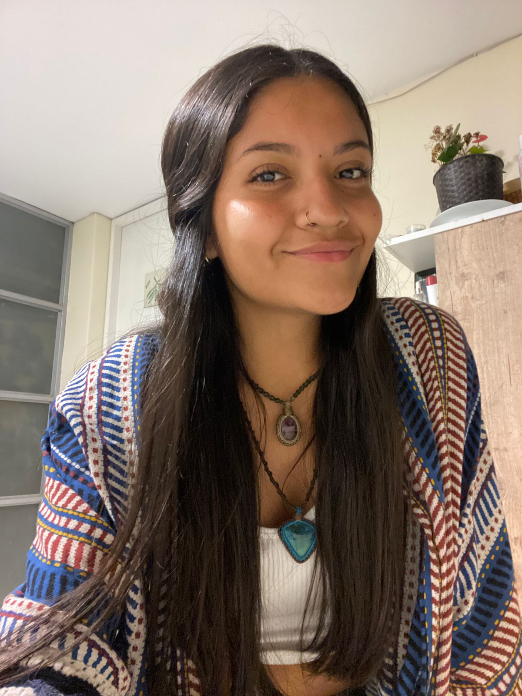

Sobre mi
Soy de la carrera de comunicación audiovisual, siempre me ha gustado el cine y todo lo relacionado a la imagen y el video. Tengo dos gatas que amo mucho, soy de Oxapampa y llevo viviendo en Lima algo de 7 años.